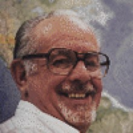

Please note: the AAS Obituaries are temporarily being hosted on this website while their full content is being ingested into the PubPub publishing platform newly adopted by the Bulletin of the American Astronomical Society. When the migration is complete, your existing links will take you to the final, migrated content. Contact peter.williams@aas.org with any questions.
R. Edward Nather (1926-2014)
The memorial essay below, part of a General Faculty resolution at the University of Texas at Austin in memory of Ed Nather, is reprinted here with permission of the authors.
R. Edward Nather was the Rex G. Baker, Jr. and McDonald Observatory Centennial research professor emeritus of astronomy. As his daughter, Lara, put it in an email she wrote on 13 August 2014, “Dad passed away this morning ... and he is now with his stars.” He is survived by his wife of over fifty years, Marilane Nather; their children, Wendy Nather, David Nather, and Lara Nather; his children Kathy Nather Thomas and Kelley Thompson from a previous marriage; nine grandchildren, and two great- grandchildren. Ed is many things. He is husband, father, grandfather, great-grandfather, colleague, mentor, and friend. Ed is an iconoclast; he is also a carefully cultivated, self-described curmudgeon who does not suffer fools gladly. We stubbornly insist on using the present tense throughout. Why will become clear.
Ed is funny and brutally honesty. He is brilliant. He is a genius, but to call him a mere genius is a disservice. He is more; he is a polymath. Unlike many so labeled, he is not a “jack-of- all trades, master of none,” rather Ed is a master of many—not a dabbler, but a doer.
Ed often points out that the most powerful form of communication is a story. Even a scientific paper should tell a story; we remember stories best. We will tell not “The Story of Mel,” but the “Story of Ed,” to steal from one of his well-known writings.
Ed’s parents, Frederick Bucklin Nather and Florence K. Skillman, along with his older brother, Frederick, welcomed him into the world on 23 September 1926, in Helena, Montana. To say that Ed’s career path was unusual is an understatement. His eventual career path started as a child in his family home, where he built his first crystal radio set. He claims that dealing with circuits he could see gave him a tremendous edge later with micro-electronics and solid-state circuits: Ed could visualize the invisible.
During World War II, Ed graduated early from high school to join the Navy. There he served as an electronic technician’s mate. In the United States Navy, he first adopted what became a research group operating principle when he built a radar-jamming device and tested it in-flight. Upon landing, he was met by military police. The principle: it is easier to get forgiveness than permission. Words to live by.
Following the war, he earned his undergraduate degree in English, at Whitman College. Next, as described in the obituary written by his family, “He then commenced his lifelong practice of following his interests and then getting paid for them.”
His extraordinary and seemingly crazy path took him from the Hanford Atomic Works and nuclear physics to writing science fiction for General Atomics, Sharp Laboratories, computer programming—writing one of the first FORTRAN compilers, becoming a pioneering hacker—actually writing the first computer virus, to innovations in medical instruments, and finally to his great scientific love, astronomy.
In 1968, Ed came to The University of Texas at Austin as an electronics engineer. Here he revolutionized computer control of telescopes and instruments, initially using Data General Nova Computer, Serial Number 1. He founded, with Brian Warner and David Evans, the field of high-speed photometry for measuring stellar radii through observations of lunar occultations and studying variable stars. The University insisted that Ed needed a graduate degree to serve on the faculty, so he went to South Africa and obtained a Ph.D. in short order. His adventures in South Africa complete, Ed served as director of Wise Observatory in Israel before returning to UT Austin to join the faculty as professor of astronomy.
His next innovation was the two-channel photometer. This created another revolution by allowing astronomers to distinguish variations in the sky, changes in transparency, or cloud from physical variations in the star.
His innovative work was publicly recognized. He was awarded the Boyden Premium from the Franklin Institute in 1980, later he was named the Rex G. Baker, Jr. and McDonald Observatory Centennial Research Professorship. He won the Muhlmann Award for the development of the Whole Earth Telescope. He was a member of the International Astronomical Union, but never joined the American Astronomical Society—in spite of much pleading on their part—because of their insistence on a Ph.D. for full membership. Ed wasn’t done with innovation. In 2001, he developed—with graduate student Anjum Mukadam—the Argos CCD time-series photometer. This instrument resurrected the oldest telescope at McDonald Observatory, the seventy-five-year-old Otto Struve Telescope, from being mothballed and transformed it into a cutting-edge machine for time-series photometry. The Argos System was used for the discovery of several new classes of objects. This includes two new classes of white dwarf variables, the DQVs and ELMVs, as well as a double eclipsing binary star with a 12.7- minute orbital period. It is the “loudest” non-interacting source of gravitational radiation known. It has produced several Ph.D. theses and will, no doubt, continue to produce more.
His instruments are always science driven. They do one thing and they do that one thing extremely well; an important life-lesson. They brought whole new fields into existence. As Jim Liebert likes to point out, Ed’s group specializes in discovery. After inventing a new field, many others would simply begin to work in it. Ed would say, “I hear the thundering hoofbeats, time to move on.” We always do.
Ed’s major legacy to The University of Texas at Austin, surprisingly, is neither his instruments nor the science done with them. It is his students. He supervised, or co-supervised, more than twenty Ph.D.s in astronomy. Most of these graduate students went on to illustrious careers in science. In addition to the graduate students, he also cherished his undergraduate students. During his four decades as a professor at UT Austin, he developed and taught two unique undergraduate courses: Astronomy in Science Fiction and Astronomy Bizarre. He stirred the imaginations of the non-science and engineering majors he taught and transformed forever the minds of many of those who took his courses. Many of these went on to be successful in fields other than science. Some of these took the time to contact Ed, sometimes decades later, to thank him for how he taught them to think.
Now it should be clear why we insist on using the present tense. This is because Ed is, above all things, a teacher. He likes to say that the most important thing we have to teach is, “how we think of things.” He transformed each one of us: family, friends, colleagues, and students. We all think of things differently as a result, a part of Ed has become a part of us, transformed us. As long as we are here, he is here. As long as we teach, he teaches. This is his growing legacy.
Photo: University of Texas at Austin
Obituary Written By: Don E. Winget, Frank Bash, and Edward L. Robinson (University of Texas at Austin)
Obituary written by: Don E. Winget, Frank Bash, Edward L. Robinson (University of Texas at Austin)
Additional links:
BAAS Citation: BAAS, 2018, 50, 023